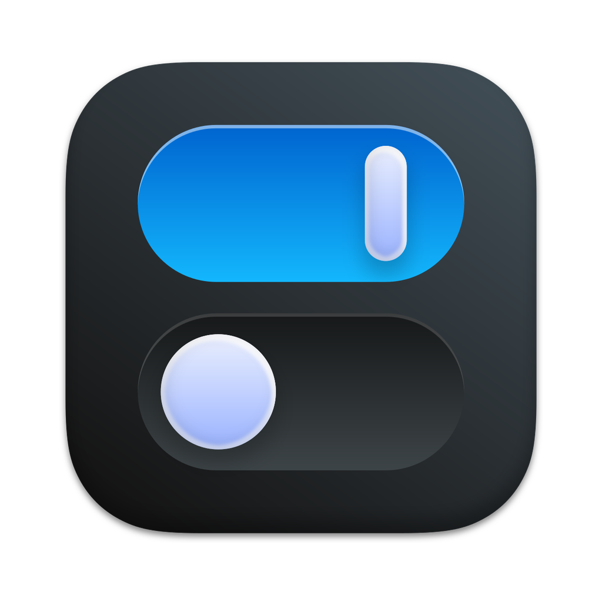

Flip
把每天要用的 macOS 开关，收进菜单栏。
一个面板，处理每天的开关
- 深浅色、夜览、原彩、隐藏桌面 / 程序坞 / 小组件
- 保持唤醒、低电量、显示器休眠、锁定屏幕
- 清空废纸篓 / 剪贴板、清理下载、退出其他应用
- 全局快捷键、自定义顺序、简体中文 / English
安装
下载 DMG，把 Flip 拖进 Applications。首次打开如被 Gatekeeper 拦截，请右键选择「打开」。
需要 macOS 12 或更高版本；Helper、台前调度等功能需要 macOS 13/14。
试用与授权
14 天全功能试用。购买后输入 License 解锁；已开启的系统功能不会被强制关闭。